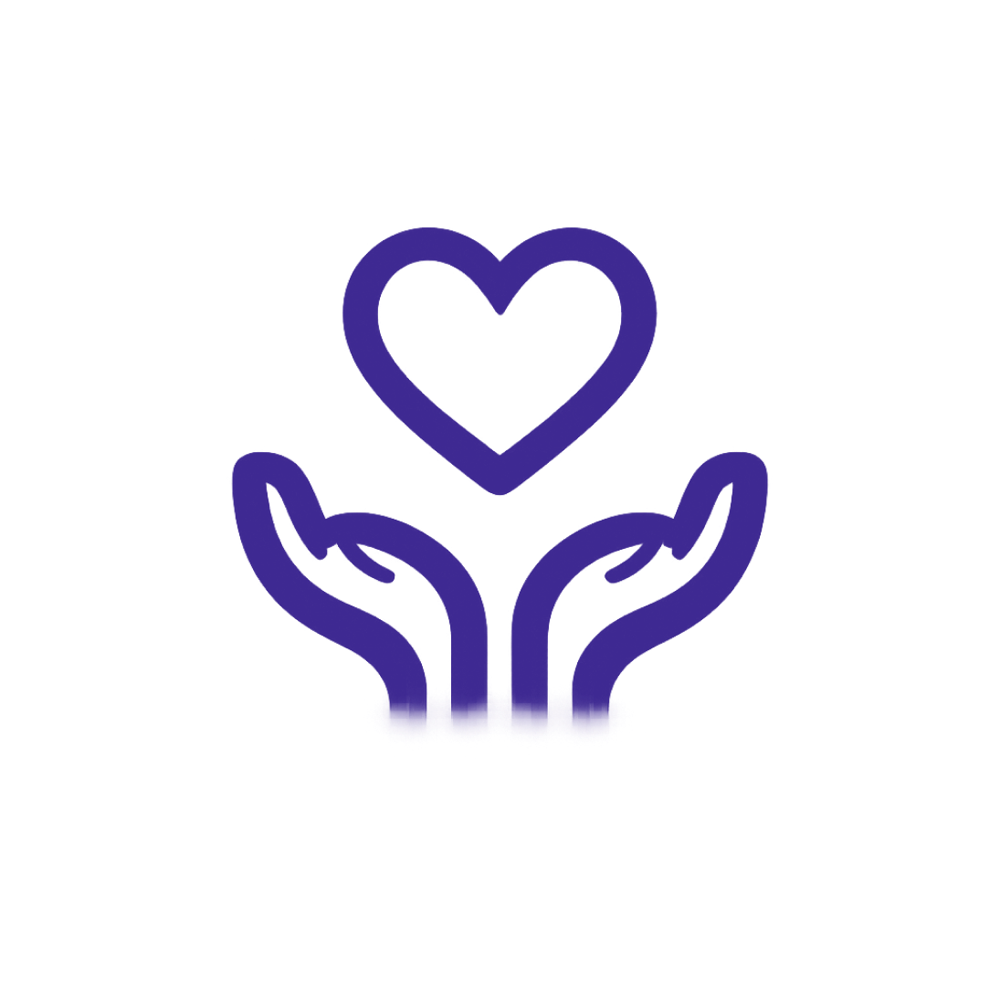
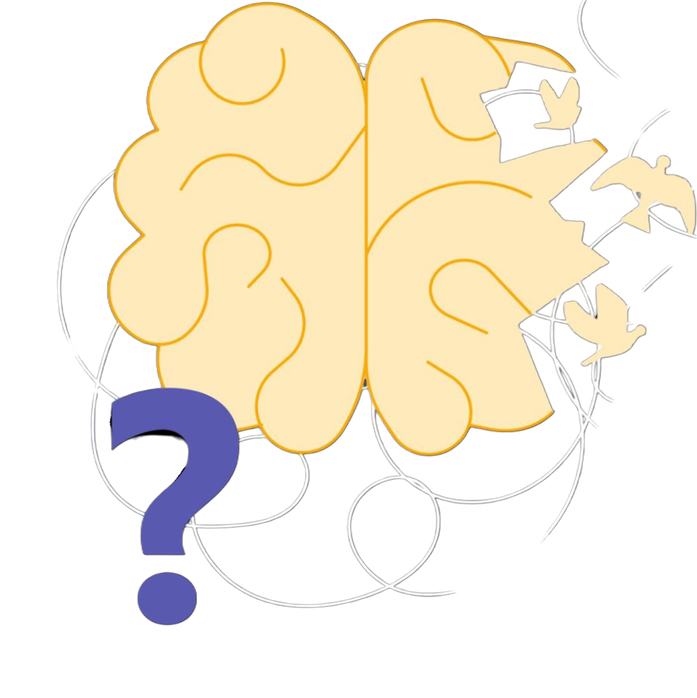
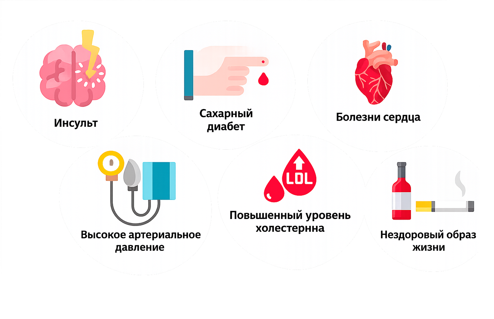
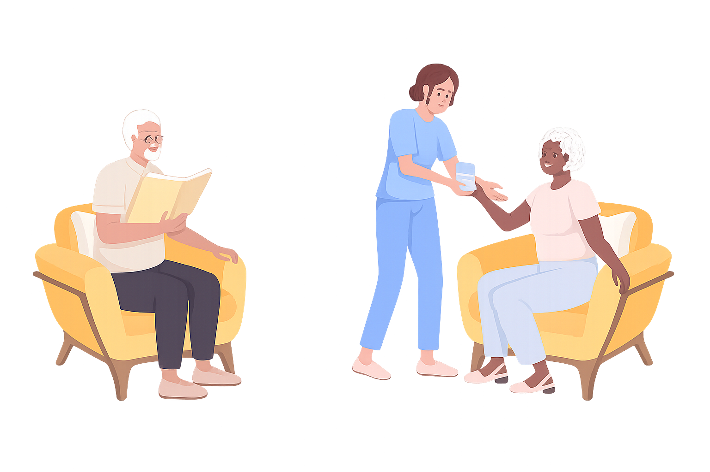
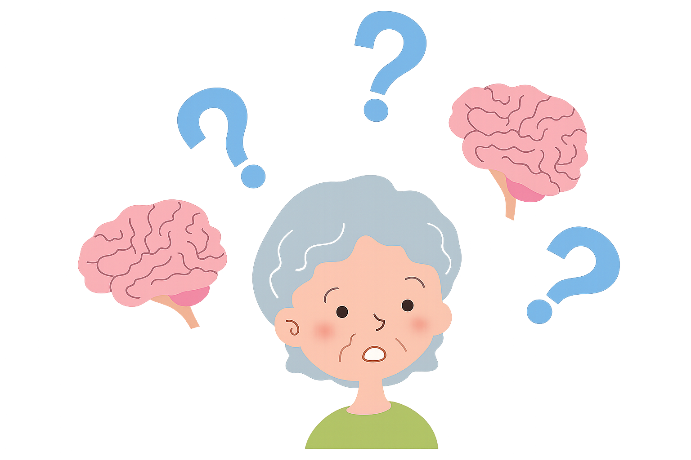
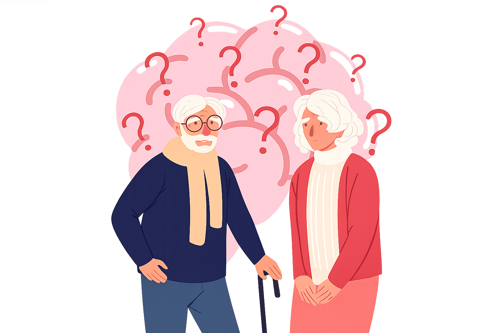

Улучшение качества жизни и восстановление утраченных личностных качеств
Помощь людям с деменцией
Поддержка людей, страдающих деменцией, и их близких. Забота, понимание на каждом этапе
Информация

Поддержка
близких
Сообщества
и мероприятия
Технологии
и помощь

Что такое деменция?
Деменция — это синдром, возникающий вследствие хронического или прогрессирующего заболевания головного мозга и характеризующийся нарушением когнитивных функций, включая память, мышление, способность к обучению, ориентацию, понимание, речь и способность принимать решения.
В отличие от нормальных возрастных изменений, деменция приводит к существенному снижению уровня повседневного функционирования человека.
Согласно данным Всемирной организации здравоохранения, деменция является одной из ведущих причин инвалидизации и зависимости среди людей пожилого возраста.
Распространенность
По данным ВОЗ, в мире более 57 миллионов человек живут с деменцией, а ежегодно регистрируется около 10 миллионов новых случаев заболевания. В связи со старением населения распространенность деменции продолжает расти.
Профилактика

На сегодняшний день методов, гарантирующих предотвращение деменции, не существует. Однако научные данные свидетельствуют о том, что снижение риска возможно благодаря:
- регулярной физической активности;
- контролю артериального давления;
- профилактике сердечно-сосудистых заболеваний;
- отказу от курения;
- ограничению употребления алкоголя;
- когнитивной активности;
- поддержанию социальных контактов.
Болезнь Альцгеймера
наиболее распространенная форма деменции, составляющая примерно 60-70% всех случаев. заболевание связано с накоплением патологических белков в тканях головного мозга, что приводит к гибели нейронов и постепенному снижению когнитивных функций.
Сосудистая деменция
развивается вследствие нарушения кровоснабжения головного мозга. часто возникает после инсульта или на фоне хронических сосудистых заболеваний.
Деменция с тельцами Леви
характеризуется наличием белковых включений (телец леви) в нервных клетках. помимо нарушений памяти могут наблюдаться зрительные галлюцинации и двигательные расстройства.
Лобно-височная деменция
связана с поражением лобных и височных долей мозга. на ранних стадиях чаще проявляется изменениями поведения, личности и речи.
Ранняя стадия
- на начальном этапе наблюдаются;
- ухудшение кратковременной памяти;
- снижение концентрации внимания;
- трудности с планированием деятельности;
- забывание недавних событий;
- периодическая дезориентация;
- на этой стадии человек обычно сохраняет самостоятельность.
Умеренная стадия
- выраженные нарушения памяти;
- затруднения при выполнении бытовых задач;
- потеря ориентации в знакомой обстановке;
- трудности в общении;
- изменения поведения и эмоционального состояния;
- пациент начинает нуждаться в регулярной помощи окружающих.
Тяжелая стадия
- глубокие нарушения памяти;
- утрата способности узнавать близких людей;
- серьезные речевые нарушения;
- ограничение двигательной активности;
- полная зависимость от постороннего ухода.

Факторы риска
Исследования показывают, что риск развития деменции связан со следующими факторами:
При этом наличие факторов риска не означает обязательного развития заболевания.
- злоупотребление алкоголем;
- низкая физическая активность;
- социальная изоляция;
- депрессивные расстройства;
- низкий уровень образования.

- пожилой возраст;
- артериальная гипертензия;
- сахарный диабет;
- ожирение;
- курение;
Миф 1. «Деменция — это нормальная часть старения»
Правда:
Нет, это не нормальная часть старения. Многие пожилые люди могут быть
забывчивыми, но деменция — это заболевание, а не естественное следствие
возраста. Человек начинает терять не только память, но и способность
ориентироваться в повседневной жизни, принимать решения, планировать дела
и поддерживать привычный уровень самостоятельности.
Миф 2. «После диагноза уже ничего нельзя сделать»
Правда:
Диагноз — это не конец жизни. Сегодня существуют методы лечения, которые
помогают замедлить развитие некоторых форм деменции, а также программы
поддержки, реабилитации и ухода. Многие люди после постановки диагноза
ещё долгие годы сохраняют активность, интересы, общение с близкими.
Миф 3. «Человек с деменцией ничего не понимает»
Правда:
На ранних и средних стадиях человек часто прекрасно понимает, что с ним
происходит. Он может испытывать страх, тревогу, стыд за себя и чувство
потери контроля над собственной жизнью. Даже когда память ухудшается,
уважение и внимание к человеку не теряют своей значимости.
Миф 4. «Если человек забывает вещи, значит у него точно деменция»
Правда:
Не всякая забывчивость является деменцией. Причиной могут быть стресс,
депрессия, нарушения сна, побочные эффекты лекарств или другие заболевания.
Только врач может определить причину симптомов и поставить диагноз после
обследования.

Мифы и факты
Миф 5. «Лучше не говорить человеку о диагнозе»
Правда:
Сокрытие информации часто усиливает тревогу и недоверие. Большинство
людей чувствуют изменения в своём состоянии и нуждаются в честном,
но бережном разговоре. Знание диагноза помогает человеку участвовать
в принятии решений о своём будущем и получать необходимую помощь.
Миф 6. «С деменцией должна справляться только семья»
Правда:
Уход за человеком с деменцией — сложная задача, и родственники не обязаны
справляться с ней в одиночку. Существуют врачи, психологи, социальные службы,
группы поддержки, благотворительные организации и сообщества семей,
столкнувшихся с тем же опытом.
Миф 7. «Человек специально упрямится или делает назло»
Правда:
Изменения поведения связаны с заболеванием, а не с характером человека.
Если человек повторяет один вопрос десять раз, обвиняет близких в пропаже
вещей или отказывается выполнять привычные действия, чаще всего причина
не в упрямстве, а в изменениях работы мозга.
«Альцрус»
Благотворительная организация, которая занимается проблемой деменции в России. Официально фонд был создан в 2019 году журналистом Александрой Щеткиной и врачом Марией Гантман, но работа ведётся с 2017 года.
Направления деятельности:
· обучение родных и близких с деменцией в «Школе Заботы»;
· проведение встреч в формате альцкафе в Москве и других городах;
· организация мероприятий по повышению осведомлённости о проблеме
деменции, ранней профилактике деменции.
Сайт: https://alzrus.ru/
Электронная почта: mail@alzrus.ru.
«Клуб Незабудка»
«Незабудка» — проект благотворительного фонда «Альцрус», который представляет собой сеть альцгеймер-кафе для поддержки людей с деменцией и их близких.
Суть проекта: раз в месяц семьи с пожилыми родственниками, у которых диагностирована деменция или болезнь Альцгеймера, собираются в общественных местах: кафе, клубах, домах культуры.
История: первый клуб «Незабудка» появился в Москве в 2018 году по инициативе фонда «Альцрус». В 2019 году сеть расширилась в Санкт-Петербурге и Саратове.
Сайт: https://alzrus.ru/alcgejmer-kafe
Фонды
НКО
«Школа заботы»
Проект Фонда «Альцрус» для помощи ухаживающим за пожилыми с деменцией. Включает семинары, тренинги, онлайн-ресурсы и полиграфию о деменции.
Цель — помочь ухаживающим улучшить качество жизни всей семьи, включая самого пожилого родственника с деменцией, а также оказать поддержку и предоставить информацию о навыках, методах и услугах.
В программе:
· обсуждение медицинских вопросов (что такое болезнь Альцгеймера, признаки,
стадии, современные средства лечения);
· обсуждение вопросов ухода, взаимодействие с государством, оформление документов,
общение;
· презентация товаров по уходу за пожилыми с деменцией.
Сайт: https://alzrus.ru/shkola-zaboty
«Память поколений»
Реализует проект «Деменция.net»
Особенности проекта:
· разработана информационно-методическая база — материалы, видеоролики,
онлайн-ресурс «Деменция.net»;
· разработан онлайн-курс по уходу за людьми с деменцией «Забота и Я».
На сайте «Деменция.net» можно пройти онлайн-тестирование на наличие когнитивных изменений и ознакомиться с полезными материалами.
Сайт: «Деменция.net», телефон: +7 (925) 725-38-49.
Памятка тем, кто ухаживает за близкими с деменцией
Ухаживать за человеком с деменцией очень непросто. Мы поможем вам оставаться чутким и деликатным до самого конца.
Беспокойство и раздражение больного могут быть признаками боли, которую
он не способен описать словами.
Будьте готовы каждый раз заново устанавливать контакт и доверительные
отношения, даже если деменцией страдает самый близкий, родной человек.

Нельзя
- Кричать на больного.
- Разговаривать как с ребенком.
- Говорить: «Я же тебе рассказывал(а)!», «Ты что, забыл(а)?».
- Спорить с больным и пытаться доказать, что он неправ.
- Насильно возвращать человека к реальности, если это вызывает тревогу или страх.
Можно
- Помнить о достоинстве человека: он болеет и многого не понимает.
- Соблюдать привычные ритуалы: устраивать семейные обеды, вечерние прогулки.
- Говорить кратко и понятно: одна мысль = одна фраза.
- Не торопиться с ответом, дайте больному время понять услышанное.
- Всегда исходить из реакции и состояния больного.
- Включать больному музыку и песни из его молодости, показывать любимые фильмы.
- Обеспечить безопасность дома.
- Использовать напоминания, подписи на дверях и предметах.
- Деменция — это болезнь: постарайтесь не стесняться своего близкого.
- Ваша логика здорового человека не поможет понять поведение больного.
- Человек с деменцией может воспринимать мир иначе. Постарайтесь создать для него спокойную среду, не вступая в споры и не вызывая дополнительного стресса.
- Дайте человеку возможность выражать свои чувства.
- Если вы поместили вашего близкого в специальное учреждение для больных деменцией, это не означает, что вы плохой родственник.
«Деменция. Книга в помощь вам и вашим родным»
Лев Кругляк — подробное пособие от врача, где простым языком объясняются
стадии болезни, медицинские аспекты и правила повседневного ухода
«Инструкция фонда фонда «Альцрус» — бесплатный практический гид, в котором собраны алгоритмы действий, чек-листы контроля состояния, памятки и советы психологов по профилактике выгорания.
«Поговорим о деменции», Лора Уэймен — книга известного геронтолога. Она учит «встраиваться» в реальность больного человека, а не спорить с ним.
«Деменция: Как жить, если близкий человек болен», Томас Харрисон, Брент Форестер — свежее и полное руководство по общению и психологической самопомощи
Книги
российских
авторов и врачей

 1.png)


«Деменция. Первые признаки и помощь близкому», Денис Рассоха, врач-психиатр, соучредитель московской клиники “DENIRA”. Денис делится своей экспертизой и отвечает на актуальные вопросы.
Подкасты
Рассуждения
«Деменция. Что делать близким?», Татьяна Гурьянова. Дочь пациентки с деменцией, делится тем как справляться с таким тяжелым больным, что делать близким и как не допустить ухода в собственную депрессию

Интервью со специалистом
Мария Шевцова: клинический психиатр
Опыт 9 лет
Образование
Учится сейчас
Институт Психологии и Психоанализа на Чистых прудах.
“Основы современной психосоматики”
2018
Восточно-Европейский Институт Психоанализа. Психология,
бакалавриат.
2018
Восточно-Европейский Институт Психоанализа. Психолог-психоаналитик.
2011
РГПУ им Герцена специальность “биология” учитель биологии.
Чем деменция отличается от обычных возрастных изменений памяти?
-Деменция вызывает необратимое снижение когнитивных функций, которое со временем прогрессирует и влияет на повседневную жизнь больных и их родственников.
Что самое страшное для семей, когда они впервые сталкиваются с деменцией?
-Осознание необратимости и прогрессирования болезни. От лица доктора, я могу отметить: самое тяжелое при деменции — это физическая потеря близкого, а потеря эмоциональной связи. Со временем болезнь стирает образы самых родных людей. Пациенты перестают узнавать даже собственных детей. Это глубокая травма как для самого больного, который теряет опору в мире, так и для семьи.
А что самое обнадёживающее?
-Современные методы лечения. Наука идёт только вперед, и так или иначе мы продвигаемся в изучении когнитивных нарушений, разрабатываем препараты.
О какой истории вы вспоминаете чаще всего?
-Таких историй очень много. Сложно выделить одну. Большое влияние оказывает окружение. Есть случаи, когда человека поддерживает вся семья. Но, к сожалению, часто встречаются одинокие люди, в жизни которых никто не участвует
Что бы вы сказали человеку, который только что узнал о диагнозе у близкого?
-Нужно окружить близкого человека вниманием и заботой, чтобы он почувствовал, что он не одинок.
Яркое прошлое -
достойное настоящее
Помощь людям с деменцией
Проект, посвящённый поддержке людей, страдающих деменцией, и их близких. Забота, понимание и технологии для достойной жизни